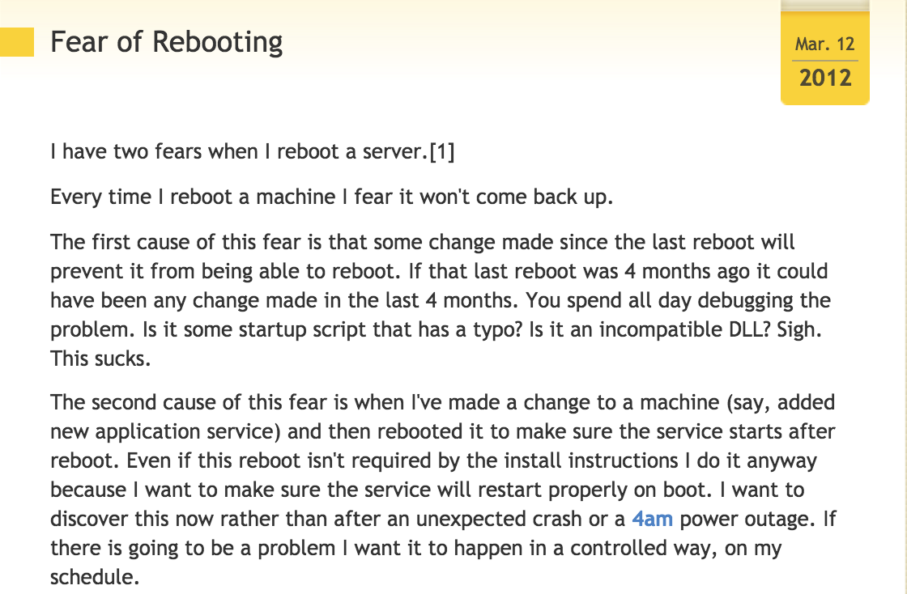

From hell to Heaven to hell
BSides 2016
Joelson Soares - https://www.linkedin.com/in/joelson / joelson_soares@trendmicro.com / malwar.org
Ari Neto - https://br.linkedin.com/in/arineto / ari_neto@trendmicro.com
Using reveal.js - Created by Hakim El Hattab / @hakimel
Quem somos nós?
No começo...
Infraestrutura:
- Muitas coisas para olhar:
- Compute (CPU/Memory/NET_IO/Disk_IO)
- Network (Switches, Routers, Load Balancers)
- Network Security (Firewalls, IPS, IDS, Proxies, VPN Concentrators)
- Storage (Disk, Block, Tape)
- Racks, Cabling, HVAC - Heating, ventilation and air conditioning
...distanciando das necessidades da área de negócio...
Meu Perímetro...
- Firewall FrontEnd/BackEnd
- IPS de Rede
- Detecção de APT
- Antispam / Controle de Navegação
- Antimalware
- Concentrador de VPN / Acesso Remoto
- Load Balance/App Firewall
- VLANs: Web / App / Data
- IPS de Host
- Mobile/BYOD
- Hardening de SO/APP
- Controle software, Gestão de patches (endpoints/servidores)
Cada empresa tem o seu próprio ciclo:
- Lifecycle: Refresh Software/Hardware
- Como manter o sofware e hardware atualizados
- Como usar novas tecnologias
- Decidir o que vc vai gerenciar e o que vc vai ser terceirizado...
...ciclos longos geralmente...
Demora, muitos detalhes técnicos... Muito complicado para comunicar para as áreas usuárias:
- Planejamento: Definindo a arquitetura
- Planejamento: Transformando os requerimentos de arquitetura em tecnologia e serviços
- Compras: Hardware, Software e Serviços
...Ufa!!! Mas falta o deploy...
Implantação:
- Datacenter: Espaço físico, Cabling, HVAC
- Setup: SO, patches, managament/monitoring/antimalware
- Gerenciamento: hostname/ip, firewall rules, managament/monitoring/antimalware
- Segurança: security baseline, vulnerability assessment, event forwarding
- Backup: backup survey and deployment
- Aplicação: application deployment, dev/qa/prod environments, monitoring, batch scheduling
- Transição para produção: RFCs/GMUDs, CMDB, management spreadsheets...
- Go live!!!
My Precious Infrastructure
Ponto de vista dos nossos clientes:
- Dificuldade de entender a linguagem de TI
- Muitos processos para seguir
- Muitas razões para "não fazer" doque "como podemos fazer isso funcionar"
- Difícil de ver TI como um parceiro ou um provedor de serviços
- TI esta muito preocupada com sua visão de tecnologia e indicadores do que entregar tecnologia para novas oportunidades de negócio
...muito devagar...
Leaving Hell
É muito difícil manter a infraestrutura.
- Manter segurança no perímetro
- Manter ambiente atualizado
- Replicar configurações
- Gestão de capacidade
- Auditar alterações
- Controle de acesso
- Manter ambiente documentado
- Deployment e reconfigurações de padrões
Medo de reboot
 http://everythingsysadmin.com/2012/03/fear-of-rebooting.html
Se tivesse todos os patches aplicados não teria sido infectado
Solução... ir para a nuvem? Que nuvem?
Minha Nuvem?
Tecnologias:
- IaaS: Openstack, CloudStack
- Hypervisor: KVM, XenServer, ESXi, HyperV
- Network: SDN, NFV...
- Storage: SDS, Object, File, Block
- E muito mais...
Going to heaven
É simples ir para nuvem? É só subir?
Pets vs Cattle...

Então...
- Shared Responsibility:
- Controles Diferentes no Perímetro
- Desapego: Tchau equipamentos Físicos!
- VLANs? Tchau VLANs!!
- Pensar Distribuído:
- Infraestrutura como um Pool de Recursos
- Alocação oportunística (on demand) de Recursos Computacionais
- Serviços Disponíveis pela rede em alta velocidade
- Pegue do catálogo de serviços:
- Concentrador de VPN
- Load Balance
- Imagem de SO
Security Concerns - 2016
- CSA - Cloud Securtiy Alliance
- Application Flaw
- Data Breaches
- Weak Identity, Credential and Access Management
- Insecure APIs
- System and Application Vulnerabilities
- Account Hijacking
- Human Flaw
- Malicious Insiders
- Advanced Persistent Threats (APTs)
- Data Loss
...o paraíso é real, ou uma versão do inferno?
Source: https://cloudsecurityalliance.org/download/the-treacherous-twelve-cloud-computing-top-threats-in-2016/
Pague pelo Uso!
Como um Hotel?
SIM!!!
- por hora/min
- Pay as you go
- Reservas
- Leilão
Respondendo à demanda...
- Autoscaling - Metric Load Alarms:
- CPU
- Network
- IO
- Queue
- Custom metric
Selfhealing - Detectando falhas e corrigindo
- Service Port
- Health Status URL
- Application Cache Layers
- Persisting data
- Snapshot
- Object Storage
Inviabilidade de Concentrar o Tráfego em um Portão
Múltiplos Portões
Se o ambiente escala sozinho, como eu sei que esta consistente?
O Arquiteto ajuda?
Configuration Managers
Configuration Managers
Eles ajudam com várias coisas:
- Definem a configuração em arquivo (que pode ser versionado)
- Garantem que o ambiente sempre estará em um estado pré-definido (idempotência)
- Versão de Softawre
- Tunnings de SO: sysctl, ulimit, selinux, permissões..
- Garantem a consistência de configuração em um ambiente distribuído
- Criam abstrações para acionamento do IaaS e do SO
- Dependendo de como você usar, adeus SSH!!
- Evite automatizar problemas!!!
Trazendo para o estado desejado
- Puppet: "If it finds any resources that are not in their desired state, it makes any changes necessary to correct them."
https://docs.puppet.com/puppet/latest/reference/architecture.html - Ansible: "Ansible features an state-driven resource model that describes the desired state of computer systems and services, not the paths to get them to this state."
https://www.ansible.com/configuration-management - Chef: "...uses a “convergent” model of configuration. As changes propagate through the nodes, the network as a whole converges to the desired configuration state."
https://www.chef.io/solutions/infrastructure-automation/
Infrastructure as Code
{
"AWSTemplateFormatVersion" : "2010-09-09",
"Description" : "AWS CloudFormation EC2InstanceWithSecurity: Create an Amazon EC2 instance running the Amazon Linux AMI.",
"Parameters" : {
"KeyName": {
"Description" : "Name of an existing EC2 KeyPair to enable SSH access to the instance",
"Type": "AWS::EC2::KeyPair::KeyName",
"Default" : "secdash",
"ConstraintDescription" : "must be the name of an existing EC2 KeyPair."
},
"InstanceType" : {
"Description" : "WebServer EC2 instance type",
"Type" : "String",
"Default" : "t2.nano",
"AllowedValues" : [ "t1.micro", "t2.nano", "t2.micro", "t2.small"]
,
"ConstraintDescription" : "must be a valid EC2 instance type."
},
"VPC": {
"Description" : "Id of my VPC",
"Type" : "String"
},
"Subnet": {
"Description" : "VPC Public Subnet",
"Type": "String"
},
"SSHLocation" : {
"Description" : "The IP address range that can be used to SSH to the EC2 instances",
"Type": "String",
"MinLength": "9",
"MaxLength": "18",
"Default": "0.0.0.0/0",
"AllowedPattern": "(\\d{1,3})\\.(\\d{1,3})\\.(\\d{1,3})\\.(\\d{1,3})/(\\d{1,2})",
"ConstraintDescription": "must be a valid IP CIDR range of the form x.x.x.x/x."
},
"DockerUser" : {
"NoEcho": "true",
"Description" : "The Docker Cloud Registry account username",
"Type": "String",
"MinLength": "1",
"MaxLength": "16"
},
"DockerPassword" : {
"NoEcho": "true",
"Description" : "The Docker Cloud Registry account password",
"Type": "String",
"MinLength": "1",
"MaxLength": "20"
},
"DockerEmail" : {
"NoEcho": "true",
"Description" : "The Docker Cloud Registry account email",
"Type": "String",
"MinLength": "1",
"MaxLength": "30"
}
},
"Mappings" : {
"AWSInstanceType2Arch" : {
"t2.nano" : { "Arch" : "HVM64" },
"t2.micro" : { "Arch" : "HVM64" },
"t2.small" : { "Arch" : "HVM64" }
},
"AWSRegionArch2AMI" : {
"us-east-1" : {"PV64" : "ami-2a69aa47", "HVM64" : "ami-8fcee4e5", "HVMG2" : "ami-2e5e9c43"}
}
},
"Resources" : {
"EC2Instance" : {
"Type" : "AWS::EC2::Instance",
"Properties" : {
"InstanceType" : { "Ref" : "InstanceType" },
"SecurityGroupIds" : [ { "Ref" : "InstanceSecurityGroup" } ],
"KeyName" : { "Ref" : "KeyName" },
"SubnetId": { "Ref": "Subnet" },
"ImageId" : { "Fn::FindInMap" : [ "AWSRegionArch2AMI", { "Ref" : "AWS::Region" },
{ "Fn::FindInMap" : [ "AWSInstanceType2Arch", { "Ref" : "InstanceType" }, "Arch" ] } ] },
"UserData" : { "Fn::Base64" : { "Fn::Join" : ["", [
"#!/bin/bash -xe\n",
"yum install docker -y\n",
"chkconfig docker on\n",
"service docker start\n",
"docker login",
" -e ", { "Ref" : "DockerEmail" },
" -u ", { "Ref" : "DockerUser" },
" -p ", { "Ref" : "DockerPassword" }, "\n",
"docker run --name=dois -h dois -p 80:8000 -d arineto/dois\n"
]]}}
}
},
"InstanceSecurityGroup" : {
"Type" : "AWS::EC2::SecurityGroup",
"Properties" : {
"VpcId" : { "Ref" : "VPC" },
"GroupDescription" : "DOIS - Enable SSH and HTTP",
"SecurityGroupIngress" : [ {
"IpProtocol" : "tcp",
"FromPort" : "22",
"ToPort" : "22",
"CidrIp" : { "Ref" : "SSHLocation"}
},
{
"IpProtocol" : "tcp",
"FromPort" : "80",
"ToPort" : "80",
"CidrIp" : { "Ref" : "SSHLocation"}
} ]
}
}
},
"Outputs" : {
"InstanceId" : {
"Description" : "InstanceId of the newly created EC2 instance",
"Value" : { "Ref" : "EC2Instance" }
},
"AZ" : {
"Description" : "Availability Zone of the newly created EC2 instance",
"Value" : { "Fn::GetAtt" : [ "EC2Instance", "AvailabilityZone" ] }
},
"PublicDNS" : {
"Description" : "Public DNSName of the newly created EC2 instance",
"Value" : { "Fn::GetAtt" : [ "EC2Instance", "PublicDnsName" ] }
},
"PublicIP" : {
"Description" : "Public IP address of the newly created EC2 instance",
"Value" : { "Fn::GetAtt" : [ "EC2Instance", "PublicIp" ] }
}
}
}
Infrastructure as Code - CI/CD
Continous Integration / Continous Deployment
machine:
services:
- docker
environment:
AWS_DEFAULT_REGION: us-east-1
pre:
- sudo pip install setuptools
- sudo pip install ansible==2.1.1.0 boto==2.42.0 awscli==1.10.22
- ansible --version
- pip freeze
dependencies:
override:
- docker info
- docker login -e $DOCKER_EMAIL -u $DOCKER_USER -p $DOCKER_PASS
- docker build -t $CIRCLE_PROJECT_REPONAME .
test:
override:
- docker run -d -p 80:8000 $CIRCLE_PROJECT_USERNAME; sleep 10
- curl --retry 10 --retry-delay 5 -v http://localhost
deployment:
production:
branch: master
commands:
- docker tag dois $CIRCLE_PROJECT_USERNAME/tmbsides
- docker push $CIRCLE_PROJECT_USERNAME/$CIRCLE_PROJECT_REPONAME:$CIRCLE_TAG
- docker push $CIRCLE_PROJECT_USERNAME/$CIRCLE_PROJECT_REPONAME
- export ENV=prd ; cd ~/$CIRCLE_PROJECT_REPONAME/ansible/app-env ; ansible-playbook playbook.yml -vvvv
staging:
branch: staging
commands:
- docker tag dois $CIRCLE_PROJECT_USERNAME/$CIRCLE_PROJECT_REPONAME:$CIRCLE_BRANCH
- docker push $CIRCLE_PROJECT_USERNAME/$CIRCLE_PROJECT_REPONAME:$CIRCLE_BRANCH
feature:
branch: /feature-.*/
commands:
- echo $CIRCLE_BRANCH
- docker tag dois $CIRCLE_PROJECT_USERNAME/$CIRCLE_PROJECT_REPONAME:$CIRCLE_BRANCH
- docker push $CIRCLE_PROJECT_USERNAME/$CIRCLE_PROJECT_REPONAME:$CIRCLE_BRANCH
- export ENV=prd ; cd ~/$CIRCLE_PROJECT_REPONAME/ansible/app-env ; ansible-playbook playbook.yml -vvvv
Blz... Mas se as instâncias nascem e morrem, o que significa gerenciar a configuração?
A que nasceu:
- A instância entrou no gerenciamento/CMDB?
- Esta com todos os patches instalados?
- A aplicação esta rodando corretamente?
- Ela entrou na monitoração?
- Putz... Cadastraram na Planilha? huehuehue
A que morreu:
- E os eventos de segurança?
- E a análise forense?
- E os eventos da aplicação?
- E a persistência dos dados em caso de um ataque?
- Xii, tá gerando um monte de eventos na monitoração...
- Tira da planilha!!!!!! huehuehuehuehuehuehuehuehue
Pensei que era mais fácil...
Imagem: Reducing Your Vulnerability to Computer Virus Attacks
Se tudo é dinâmico e distribuído... é importante
- Gerar e persistir eventos
- Maneiras de apresentar esta informação para:
- Identificar origem: IaaS, Infraestrutura, Aplicação, Segurança?
- Gerar indicadores
Segmentação from hell
Isso era difícil de fazer e agora é bem mais fácil...
Segmentação from heaven
E a segurança?
Pense antes e integre no ciclo de provisionamento
- Audite suas receitas de provisionamento
- Controle a origem do software
- Defina e aplique segurança como parte da infraestrutura
- Controle suas credenciais de provisionamento e credenciais de acesso às instâncias
- Restringir o acesso usando Security Groups, evite usar SGs genéricos
- Audite os Security Groups/Policies/Roles/Grupos/Usuários
- Use MFA
- FW/IPS/IDS de host como uma camada extra de segurança
Facing the devil...
in the heaven!!
Facilidade para escalar/provisionar tem um trade off... impacto nos custos!
Facing the devil...
- Load:
- Crawling
- DoS/DDoS Attack
- Application looping
- Acesso local na instância:
- Exploração de roles atachadas na instância
- Exploração de Security Groups genéricos
- Outbound traffic
- Credenciais:
- Vazamento de credenciais com acesso de provisionamento (repos publicos no github)
- Outbound traffic...
Sob fogo cerrado
Web Crawling/Scraping/DoS
Importante pensar em:
- WAF: Web Application Firewall
- CDN: Content Delivery Network
- Web Cache: to offload web servers
- Web Server/Cache: Rate limit / Throttling
-
// the check ....for 10 req/minute if(throttle.is_allowed(req.http.Host + "wp1", "10req/m") > 0s) { std.log("XXX Rate limit 10req/m throttling : " + req.http.Host + " too many requests for " + req.url + " / " + req.http.X-Forwarded-For ); error 429 "Calm down"; } -
limit_req_zone $binary_remote_addr zone=one:10m rate=1r/s; server { location /search/ { limit_req zone=one burst=5; }
Quem controla as chaves? De quem são os dados? A nuvem é o céu ou um inferno distante?
Imagem: Silkshare